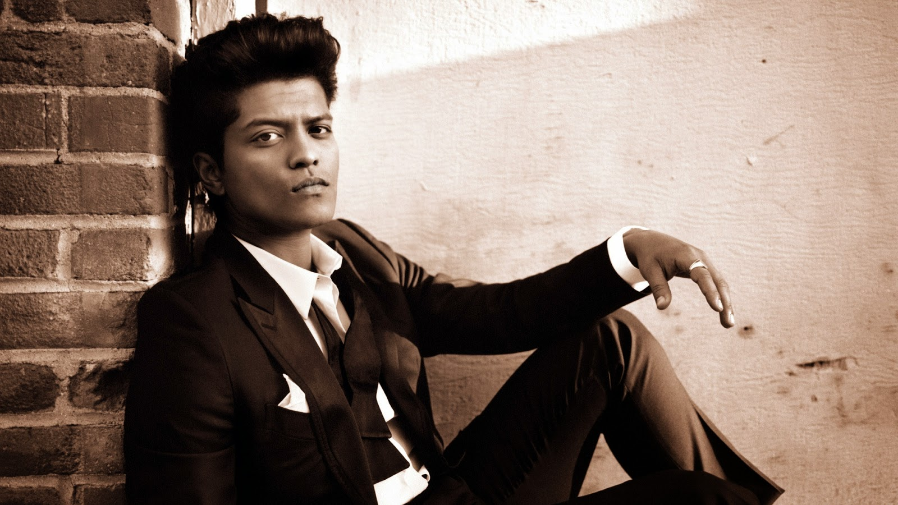

Peter Gene Hernandez nascut in 8 octombrie 1985,Honolulu, SUA, cunoscut sub numele de scenă Bruno Mars, este un cântăreț, compozitor și producător muzical american. Crescut în Honolulu, Hawaii într-o familie de muzicieni, Mars a început să creeze muzică de la o vârstă fragedă. După ce a cântat pe diverse scene din orașul său natal pe perioada copilăriei, a decis să urmeze o carieră in muzică, mutându-se în Los Angeles după absolvirea liceului. Mars a început să compună cântece pentru alți interpreți, alăturându-se echipei de producție The Smeezingtons.
După o neînțelegere cu Motown Records, Mars a semnat cu Atlantic Records în 2009. A devenit recunoscut ca solist după ce a interpretat și compus partea muzicală a cântecelor „Nothin' on You” de B.o.B și „Billionaire” de Travie McCoy. De asemenea a ajutat la compunerea unor hituri precum „Right Round” de Flo Rida, împreuna cu Kesha și „Wavin' Flag” de K'naan. În octombrie 2010, a lansat albumul de debut, Doo-Wops & Hooligans. Reprezentat de piesele „Just the Way You Are” și „Grenade”, ajunse pe primele locuri la nivel global, albumul a atins poziția a treia în Billboard 200. Mars a fost nominalizat la șapte premii Grammy, printre care și cele din 2011, câștigând premiul pentru Cea mai bună performanță pop masculină pentru piesa „Just the Way You Are”.